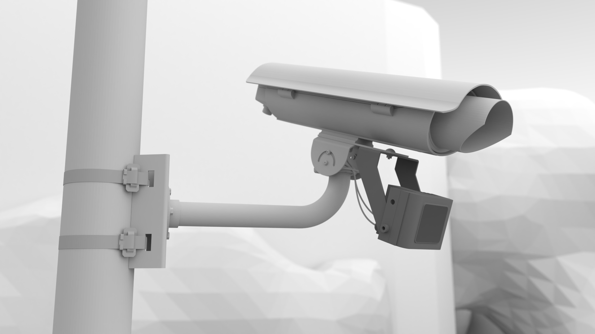
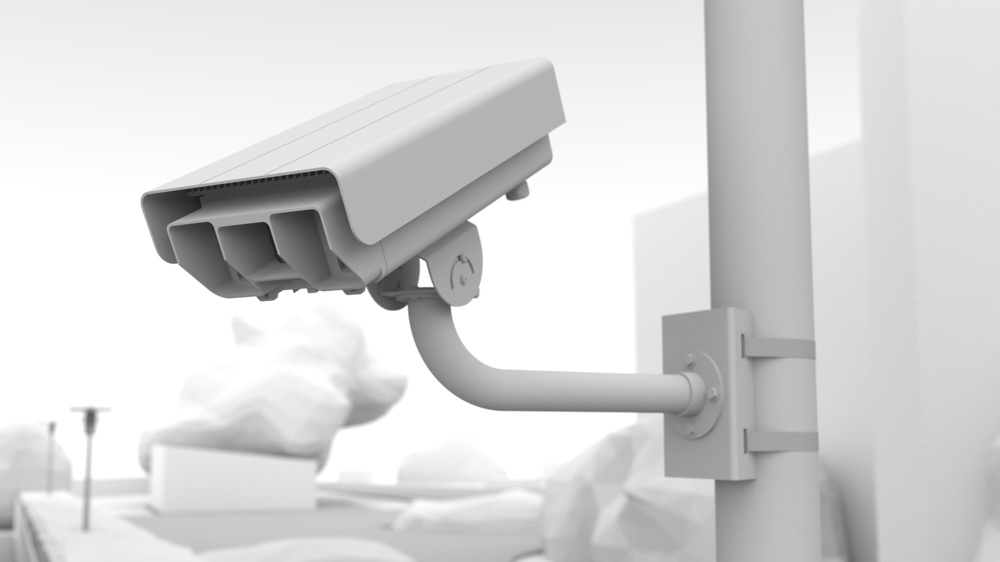
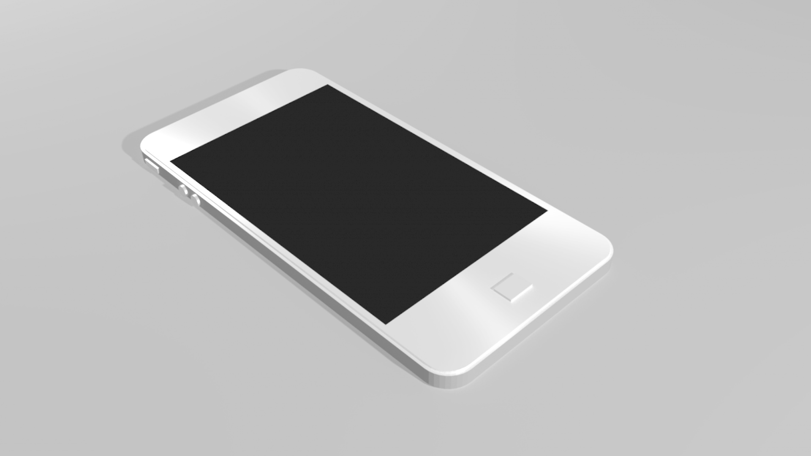
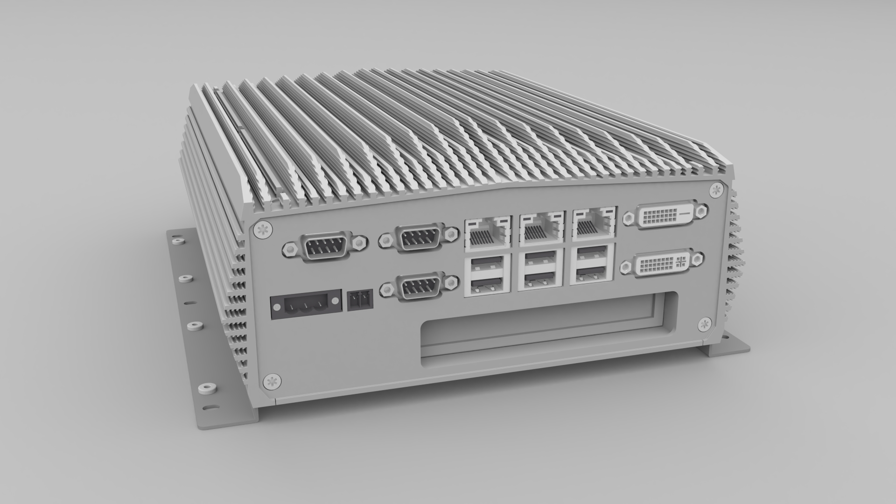

4. Urządzenia¶
W niniejszym rozdziale opisano urządzenia kluczowe / specyficzne dla systemu identyfikacji pojazdów.
4.1. Kamera ANPR¶
Kamera ANPR to kamera cyfrowa dostarczająca strumień wideo dostosowany do detekcji tablic rejestracyjnych oraz rozpoznawania numerów rejestracyjnych. Kamera ta posiada specyficzne właściwości:
rozdzielczość obrazu co najmniej HD (1280×720p)
wysoka czułość przetwornika CMOS pozwalająca na uzyskanie dobrego (jasnego) obrazu przy czasie otwarcia migawki ≤1 milisekundy,
możliwość dostarczania zarówno obrazów kolorowych (dzień) jak i monochromatycznych (noc),
możliwość przełączania trybów „dzień / noc” – przełączany, mechaniczny filtr podczerwieni,
zmotoryzowany obiektyw ew. zmotoryzowany układ sterowania pozycją przetwornika CMOS pozwalający na zdalne poprawianie ostrości obrazu bez konieczności fizycznego dostępu do kamery,
dobrej jakości obiektyw z korektą podczerwieni, o ogniskowej pozwalającej na ustawienie pola widzenia na 1÷3 pasów ruchu, z automatycznym sterowaniem przysłoną,
dołączony promiennik podczerwieni pozwalający na poprawną pracę w porze nocnej (światło niewidzialne w zakresie 850÷940 nm),
szyfrowanie połączenia z oprogramowaniem klienta, wykorzystanie SSL/TLS i certyfikatów X.509,
możliwość wymuszenia uwierzytelniania (
user|pass) przez co zabezpieczona jest przed niepowołanym użyciem,generowanie strumienia wideo w formacie H.264 z możliwością regulacji jakości strumienia,
wbudowany interface do diagnostyki (SNMP),
możliwość synchronziacji czasu np. przez NTP,
specjalizowana obudowa redukująca zjawisko zaparowywania szybki przedniej oraz posiadająca osłonę przez bezpośrednim kontaktem z promieniami słonecznymi,
odpowiedni uchwyt montażowy z precyzyjną regulacją pozycji kamery w co najmniej 2 osiach.
Uwaga
Kamera ANPR nie przetwarza strumienia wideo, tzn. nie posiada wbudowanego procesora na analizy danych.
4.2. Smartcamera¶
Kamera inteligentna posiada wszystkie własności kamery ANPR, a ponadto:
posiada wbudowaną jednostkę obliczeniową CPU, na której przetwarzany jest strumień wideo,
posiada funkcje terminala, tzn. generuje wysokoprzetworzone dane (informacje o zarejestrowanym pojazdach),
posiada lokalny dysk (SSD), na którym może gromadzić i buforować dane,
wyposażona jest w dedykowane oprogramowanie (firmware)
4.3. Smartphone¶
Źródłem danych może być także standardowy smartphone wyposażony w oprogramowanie NeuroCar Stream VI działające w systemie operacyjnym Android.
4.4. Kontroler CPU¶
Kontroler CPU to komputer przemysłowy, montowany w szafie teletechnicznej, którego zadaniem jest przetwarzanie strumienia wideo z kamer ANPR, buforowanie danych, a następnie przesyłanie ich do systemu centralnego BackOffice. Komputer ten ma następujące cechy:
wykonanie przemysłowe, bez elementów ruchomych – brak wentylatorów, konwekcyjne odprowadzanie ciepła,
przygotowanie do pracy w rozszerzonym zakresie temperatur,
odporność na wibracje,
odpowiednia wydajność (procesor klasy Intel i5 lub i7, odpowiedni rozmiar RAM),
wbudowana pamięć masowa - dysk (SSD)
szereg interfejsów komunikacyjnych (ETH, RS-232/485, GPIO, USB2, USB3, HDMI/DVI),
możliwość rozszerzenia o modem komunikacyjny (miniPCIe) ew. dedykowaną kartę rozszerzeń PCIe,
zasilanie napięciem stałym w zakresie 12÷24V DC.